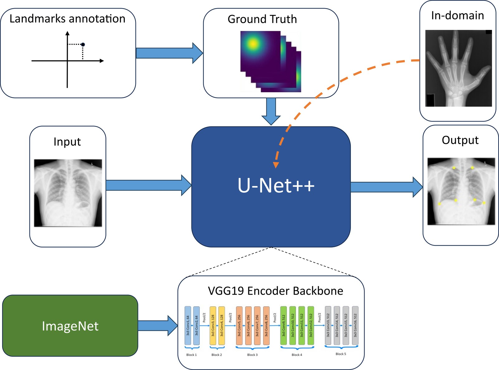
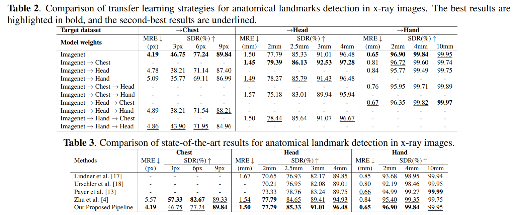

In recent years, deep learning has emerged as a promising technique for medical image analysis. However, this application domain is likely to suffer from a limited availability of large public datasets and annotations. A common solution to these challenges in deep learning is the usage of a transfer learning framework, typically with a fine-tuning protocol, where a large-scale source dataset is used to pre-train a model, further fine-tuned on the target dataset. In this paper, we present a systematic study analyzing whether the usage of small-scale in-domain x-ray image datasets may provide any improvement for landmark detection over models pre-trained on large natural image datasets only. We focus on the multi-landmark localization task for three datasets, including chest, head, and hand x-ray images. Our results show that using in-domain source datasets brings marginal or no benefit with respect to an ImageNet out-of-domain pre-training. Our findings can provide an indication for the development of robust landmark detection systems in medical images when no large annotated dataset is available.
The paper addresses the challenge of automated landmark detection in medical x-ray images, a critical step for tasks like surgical planning. Due to the limited availability of large annotated medical datasets, transfer learning is commonly used, typically pretraining models on large datasets like ImageNet. However, it is unclear if small-scale in-domain x-ray datasets can enhance performance over natural image pretraining. We propose a deep learning pipeline using a U-Net++ architecture with an ImageNet-pretrained VGG19 encoder. The pipeline generates Gaussian heatmaps as ground truth labels for landmarks, and these are used to train the model with augmented x-ray images from chest, head, and hand datasets. The study systematically evaluates whether in-domain fine-tuning improves upon ImageNet pretraining by testing various transfer learning configurations across the datasets.

The study investigates whether fine-tuning ImageNet-pretrained models on small-scale in-domain x-ray datasets improves performance. Results (Table 2) show that in-domain fine-tuning typically provides minimal or no benefit. In some cases, such as for the head dataset, fine-tuning on another x-ray dataset (e.g., chest) before the target dataset yielded slight improvements. However, for other datasets, in-domain fine-tuning occasionally degraded performance. These findings suggest that ImageNet-pretrained features transfer effectively to x-ray tasks without requiring additional in-domain data, making it the preferred approach for landmark detection in medical imaging.
The proposed pipeline is benchmarked against state-of-the-art methods on chest, head, and hand x-ray datasets (Table 3). It achieves competitive or superior performance across datasets, attaining the lowest Mean Radial Error (MRE) and highest Success Detection Rate (SDR) at clinically important thresholds. For example, the pipeline improves MRE by 25% on chest x-rays compared to Zhu et al., achieves the highest head SDRs with a 3-7% improvement at 2.5-4mm thresholds, and the highest hand SDRs of 96.90% and 99.84% at the 2mm and 4mm thresholds. These results highlight the robustness and accuracy of the proposed approach for anatomical landmark detection.

The paper "Is In-Domain Data Beneficial in Transfer Learning for Landmarks Detection in X-Ray Images?" (IEEE ISBI 2024) is a systematic study of whether fine-tuning an ImageNet-pretrained model on small-scale in-domain X-ray datasets, before fine-tuning on the target dataset, improves anatomical landmark detection over ImageNet pretraining alone. It evaluates all one-stage and two-stage transfer combinations between chest, head and hand X-ray datasets.
Three public X-ray benchmarks, with the splits of Zhu et al. (GU2Net): Chest, 279 images from the China (Shenzhen) set with 6 landmarks (229 train / 50 test); Head, 400 cephalometric images with 19 landmarks (150 train / 250 test); Hand, 909 images with 37 landmarks (609 train / 300 test).
Marginally at best. Fine-tuning the ImageNet-pretrained model on small in-domain X-ray datasets generally gives no significant gain. The main exception is the head dataset after an intermediate chest stage: MRE 1.45 mm vs. 1.50 mm and +1.60% SDR at 2 mm. In some cases, such as SDR at 10 mm on hand X-rays, in-domain fine-tuning reduces performance. The paper concludes that ImageNet pretraining should be the primary transfer learning approach.
A U-Net++ with an ImageNet-pretrained VGG19 encoder, trained to regress one Gaussian heatmap per landmark. It was selected by 5-fold cross-validation on the hand dataset against U-Net and DeepLabV3 with EfficientNet-B7, ResNeXt101 and VGG19 backbones (VGG19 is not supported by DeepLabV3), reaching 0.50 mm MRE and 98.90% SDR at 2 mm.
With ImageNet pretraining only, the U-Net++/VGG19 pipeline obtains the lowest MRE on all three datasets: 4.19 px on chest (25% better than Zhu et al.), 1.50 mm on head (10% better than Lindner et al.) and 0.65 mm on hand, with the highest SDRs of 96.90% at 2 mm and 99.84% at 4 mm on hand.
@inproceedings{DiViaISBI2024,
author = {Roberto Di Via and
Matteo Santacesaria and
Francesca Odone and
Vito Paolo Pastore},
title = {Is In-Domain Data Beneficial in Transfer Learning for Landmarks Detection
in X-Ray Images?},
booktitle = {{IEEE} International Symposium on Biomedical Imaging, {ISBI} 2024,
Athens, Greece, May 27-30, 2024},
pages = {1--5},
publisher = {{IEEE}},
year = {2024},
url = {https://doi.org/10.1109/ISBI56570.2024.10635861},
doi = {10.1109/ISBI56570.2024.10635861},
}Di Via, R., Santacesaria, M., Odone, F., & Pastore, V. P. (2024). Is in-domain data beneficial in transfer learning for landmarks detection in x-ray images? In 2024 IEEE International Symposium on Biomedical Imaging (ISBI) (pp. 1-5). IEEE. https://doi.org/10.1109/ISBI56570.2024.10635861